Kinds of Loss
Every loss has its own shape. Guides for specific losses and the feelings that come with them.
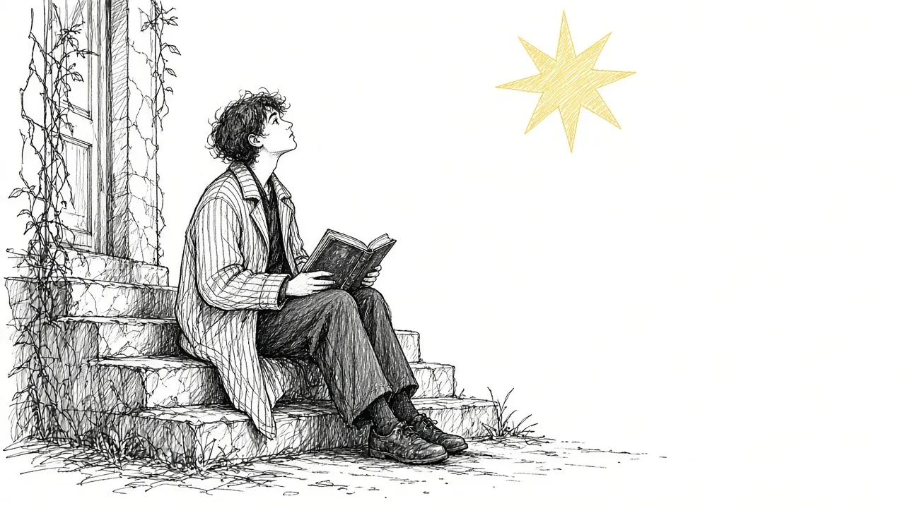
When Grief Shakes Your Faith
Loss can deepen faith or shatter it. How spiritual struggle shows up in grief and ways to navigate it.
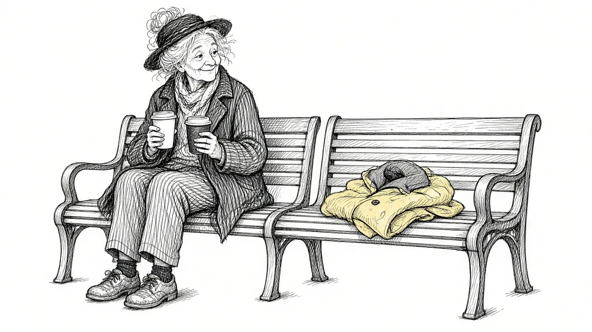
Losing a Partner: Grief After the Death of a Spouse
Losing a husband, wife, or partner changes every part of life. A guide to widowhood, identity, loneliness, and loving again.
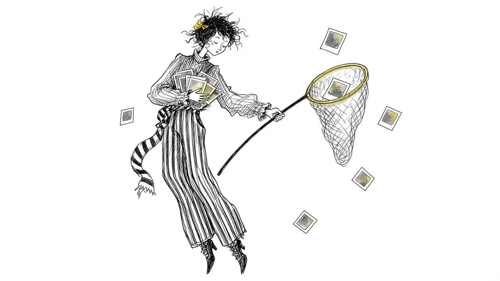
Afraid You're Forgetting Them? Grief and Fading Memories
Many grieving people fear losing the sound of a voice or details of a face. Why memories fade and how to preserve them.
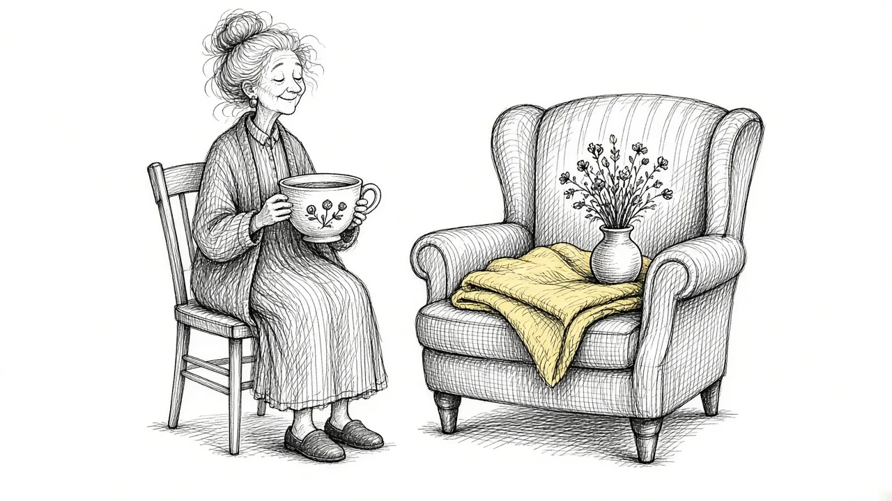
Grief After a Long Illness: Anticipatory Grief and Caregiving
Caring for someone through a long illness brings grief before and after death. A guide for caregivers on anticipatory grief and what comes next.
When Nothing Feels Right: Grieving an Imperfect Goodbye
Many people never got the goodbye they wanted. How to live with an ending that felt wrong and find some peace.
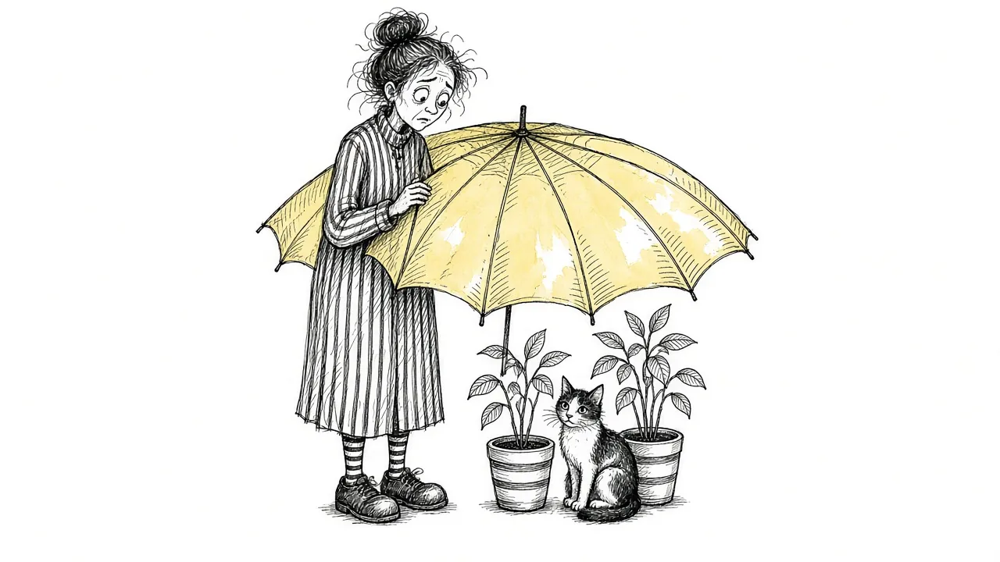
Protective Grief: When You Become Afraid of Losing Anyone Else
After a loss, many people become intensely afraid of another one. Why grief brings fear for others and how to ease it.
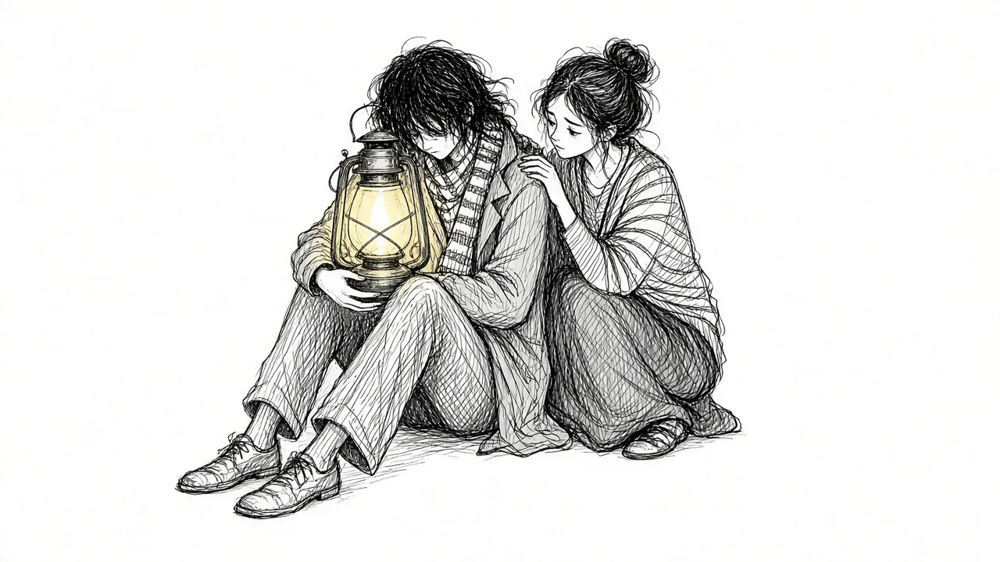
Grief After Suicide Loss
Losing someone to suicide brings a grief filled with questions, guilt, and stigma. A gentle guide for survivors of suicide loss.
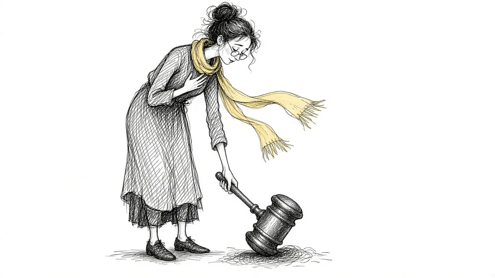
Guilt After a Death: When Your Mind Puts You on Trial
Guilt is one of the most painful parts of grief. Understand where it comes from and how to respond to it with compassion.
Multiple Losses at Once: When Grief Piles Up
Losing several people or facing many losses in a short time can overwhelm anyone. How to cope when grief piles up.
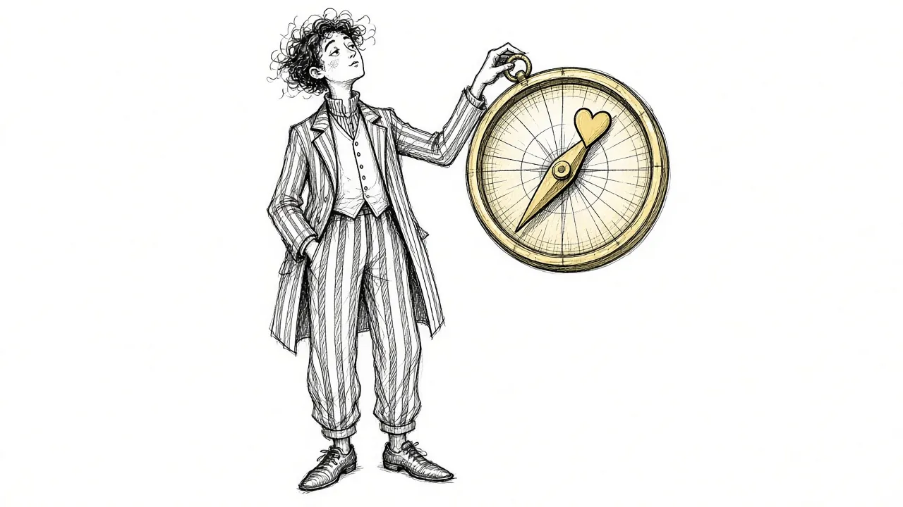
Grief and Meaning: When Loss Makes You Question Everything
A death can shake your sense of purpose and how the world works. How grief raises big questions and how people find meaning again.
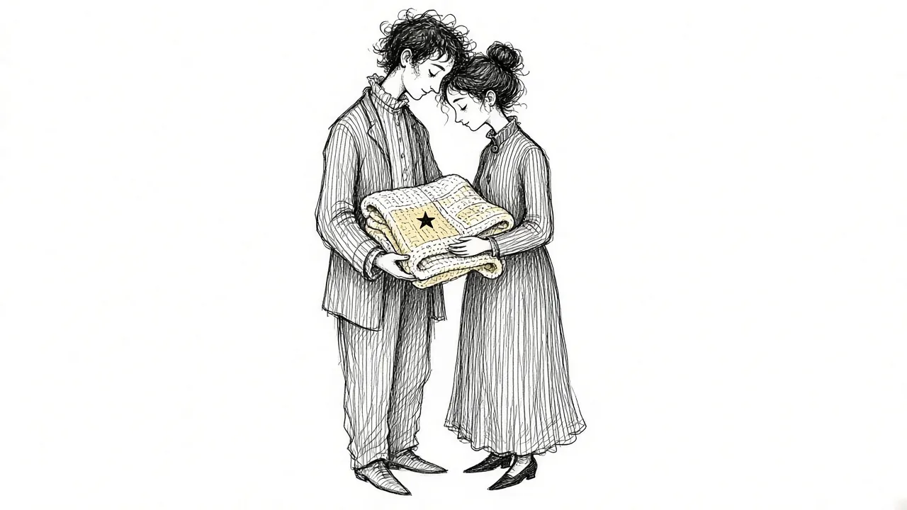
Pregnancy and Infant Loss: Grieving a Baby
Miscarriage, stillbirth, and infant loss bring a grief that is often unseen. A gentle guide for parents and the people who love them.
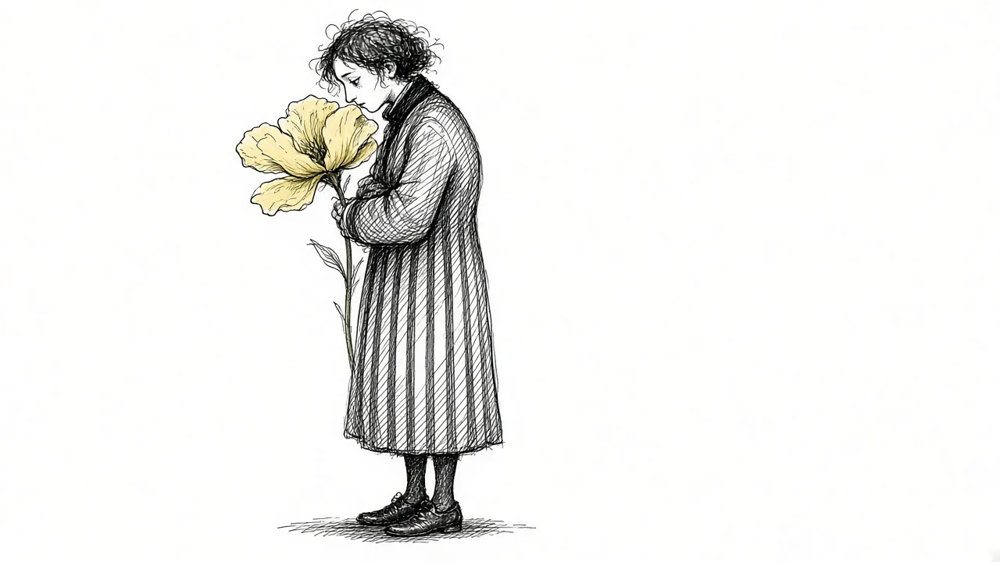
Disenfranchised Grief: When Your Loss Isn't Recognized
Some losses are not acknowledged by others: an ex, a pet, a miscarriage, a secret relationship. How to grieve when no one gives you permission.
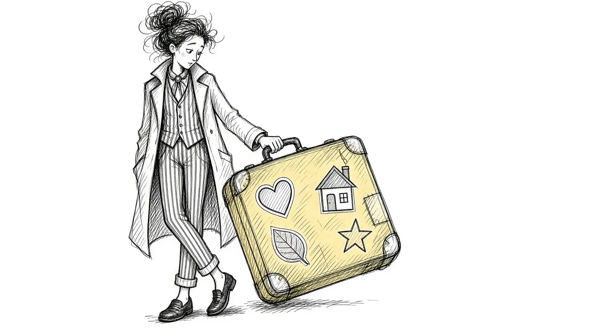
Common Types of Grief and the Fears That Come With Them
Different losses bring different fears. A guide to common forms of loss and the worries that often travel with them.
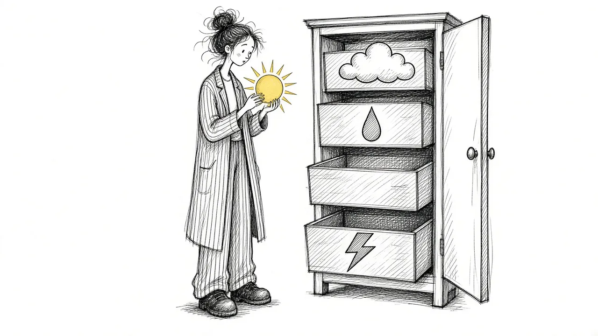
What Kind of Grief Am I Feeling?
Anticipatory, complicated, disenfranchised, ambiguous: grief has many names. A guide to the kinds of grief and why naming yours helps.
You do not have to carry it alone.
Start with a gentle, free check-in. A few quiet questions about how grief is showing up for you right now.
Take the Free Grief Check-In